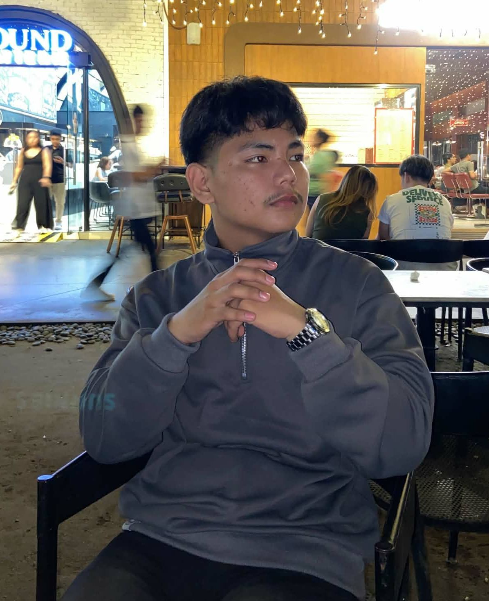

My Goals
My goal is to successfully complete my BSIT degree, gain strong skills in programming and computer systems, and prepare myself for a successful career in the IT industry.
SYSTEM ONLINE // PORTFOLIO INITIALIZED
Hello, I'm
Welcome to my personal portfolio. I am a student who is passionate about learning, exploring technology, solving problems, and developing new skills for the future. This portfolio showcases my background, achievements, experiences, and goals.
EXPLORE PORTFOLIO ↗ CONTACT MEGENIUS. DETERMINATION. INNOVATION.


01 // ABOUT ME
Welcome to my portfolio! I'm a passionate IT student working hard to learn programming, hardware, and modern technology. I'm excited to grow my skills and build a great future in IT.
My goal is to successfully complete my BSIT degree, gain strong skills in programming and computer systems, and prepare myself for a successful career in the IT industry.
My biggest motivation is my family and loved ones. Working hard to achieve my goals and building a bright future for them keeps me inspired every day.
02 // PERSONAL INFORMATION
Full Name: Jessie T. Villanueva Jr.
Nickname: Jes / Ino
Age: 21
Nationality: Filipino
Course: BSIT (1st Year)
Interests: Computer Hardware, Networking & Tech Exploration
Languages: English, Tagalog
Motto: "No lag, no bug, chill lang sa buhay basta moving forward."
I am the youngest among five siblings. Being part of a supportive family drives me to work hard, excel in my studies, and make them proud as I pursue my degree in Information Technology.
In my free time, I enjoy playing tactical and competitive online games like League of Legends (LoL) and Call of Duty: Mobile (CODM), as well as reading webtoons and manhwa.
I am interested in learning network configurations, understanding computer systems, exploring emerging software technologies, and continuously sharpening my technical problem-solving skills.
03 // OBJECTIVES
My objective is to learn as much as I can in IT, master my computer and coding skills, and graduate successfully so I can build a solid career in tech.
04 // EDUCATIONAL BACKGROUND
CURRENTLY STUDYING
University of Eastern Pangasinan
Currently expanding my knowledge in IT, programming, and computer systems.
2019 - 2022
Completed high school education and built foundational skills for college.
2013 - 2018
Completed primary education.
05 // WORK EXPERIENCE
CONSTRUCTION SUPPORT
Assisted in ducting construction projects by handling equipment, preparing materials, and supporting the foreman in daily operations.
KETO JUICE PROJECT
Supported inventory and production workflow by efficiently packaging Keto Juice products and ensuring proper handling and organization of items.
06 // SKILLS AND ABILITIES
Continuously developing core technical abilities through coursework, practical labs, and self-learning.
Key attributes and personal qualities that help me excel in team environments and academic settings.
Proven ability to collaborate, communicate, and support teams effectively in physical and technical tasks.
Quick to learn new tasks, adapt to changing environments, and tackle challenges head-on.
Strong focus on finding practical and effective solutions to problems.
Committed to completing tasks accurately and efficiently with high focus.
07 // CERTIFICATIONS
Certified in Advanced C++ Programming and Object-Oriented System Architecture.
Completed training on System Automation, Logic Operations, and Algorithmic Thinking.
Recognized for mastering HTML5, CSS3, and dynamic web user interface development.
08 // AWARDS AND ACHIEVEMENTS
Awarded for outstanding technical problem-solving and rapid adaptation to emerging technologies.
Recognized for top academic performance and dedication during the BSIT coursework foundation.
Honored for strategy, teamwork, and high-performance communication in competitive esports tournaments.
09 // CONTACT
ESTABLISH CONNECTION
Have a project, idea, or opportunity? Feel free to contact me. I am always open to learning, sharing ideas, and connecting with other people.
✉ SEND AN EMAIL ↗